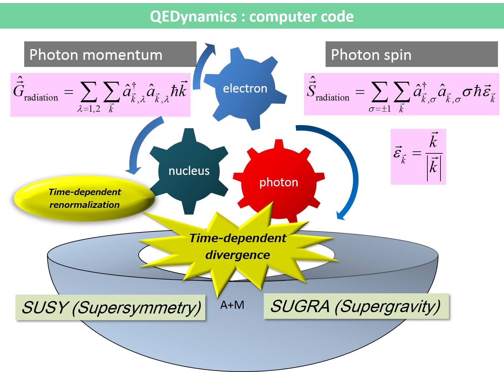

News
Introduction
Features
How to get
Primary version
Four component version
Documentation
Support

・LHC実験によりHiggs粒子が発見され、質量の起源が判明されたと報道されている
・観測される電子の質量というのはくりこまれた質量である
・共変的摂動論に基づく計算では質量に対する電磁的量子補正は無限大である
・我々は量子的光子の作り出す時々刻々発生する無限大に真正面から取り組む
・この無限大の処理は素粒子標準模型の外側から超重力理論によっても試みる
Primary version
Four component version
Last update: 20th May 2013